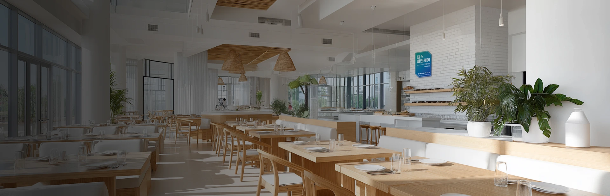

현장 대응
업종과 해충 발생 환경에 맞춰 관리 방법을 정합니다.

매장·사업장 운영
공간 진단 후 해충 종류와 위생 취약 지점에 따라 필요한 관리 범위를 선택합니다.
업종과 해충 발생 환경에 맞춰 관리 방법을 정합니다.
소독증명서와 점검 관련 안내를 확인할 수 있습니다.
주변 환경과 발생 빈도를 살펴 방문 주기를 조정합니다.
| 서비스 | 관리 대상 | 적용 검토 |
|---|---|---|
| 해충 방제 | 보행·비래 해충 | 유입 경로·발생 구역 |
| 일반 살균 | 시설물 표면 | 손잡이·선반 등 |
| 포충기 | 파리·나방 등 | 유인·포획 위치 |
| 에어컨 케어 | 내부 오염 | 분해·살균 범위 |
| 식기 케어 | 영유아 교육기관 식기 | 수거·세척 구성 |
관리 횟수는 주변 환경·해충 민감도와 적용 기준에 따라 달라집니다. 부가 서비스 및 보상 포함 여부는 개별 상품 조건을 확인합니다.
매장 면적과 업종, 주방·창고 유무, 현재 겪는 위생 문제를 알려주세요.
알고 있는 항목을 체크해 보세요.
아직 정하지 않은 내용은 상담하면서 확인할 수 있습니다.
0 / 4 항목 확인
기본 월 1회 안내를 기준으로 현장 환경과 필요한 관리 수준에 따라 달라집니다.
해충 관리와 시설 표면 살균은 대상과 방식이 달라 필요한 항목을 구분해 선택합니다.
공식 정보 참고: ADT캡스 방역·방제 안내 · 확인일 2026.10.30
캡스 제휴 가입 상담센터 · 실제 제공 기능·설치·요금·보상 범위는 선택 상품과 현장 조건에 따라 확인합니다.